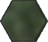
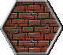
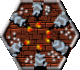
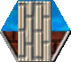
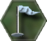
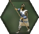
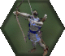

|
|
mask.gif hexagon.gif grass.gif brick.gif tower.gif bridge.gif flag.gif knight.gif pikeman.gif catapult.gif archer.gif |
DEFINITIONS: HEX = a single six-sided "space" on the map. HP = Hit Point, the points of "health" a unit has remaining. (Noted by circles on the Manifest) UNIT = a single playing piece to be used on the map. RESOURCES = Un-purchased units or supplies allowed to you for the game. CASTLE = Headquarters, the royal household for your mighty laws and decree. CATAPULT = Main Siege weapon of Medieval Europe. Destroys Defences by hurling stones. ARCHER = Foot soldier with Bows and Arrows PIKEMAN = Basic Defence. KNIGHT = Soldier on Horseback, moves fast, and kills quickly. Champion of your lands. KING = You, or any other player of the game. Manifest = The sheet that you record information of all of your playing
pieces. (Unit Number, HP...)
DICE INSTRUCTIONS: *For each game you must have 6-6sided dice (Or a 6-D6 number generator on computer.).* When attacking, or defending, roll the number of dice equal to the attacking units' attack score. Rolling an even number on one represents a "success". (Each Die has a 2/3 chance of a success.) (Attacker Successes - Defender Successes) = HITS (The number of HPs lost by defender.) BATTLE EXAMPLE- A Knight (4 attack dice) attacks an Archer unit (2 Defend Dice).
HPs of a unit can be restored, but must make it into It's King's When a unit loses all HPs, it is removed from the board and held by the destroyer of that unit. This is used to show overall damage at the end of the game.
Each player starts by selecting their color (color of paper units are printed on), and setting up their Castle on the map. SETUP:
TURN: A players turn consists of these steps in this order:
Leave open 1 dot per HP for that unit... fill in the rest. (Movement rates can be divided into two parts - part before and part after attack.) NOTE: Collecting TAX is always the LAST action taken for a turn.. TAXING LANDS:
GAME UNITS:
TOWERS:
Copyright 1998 J.A.Lindsey |